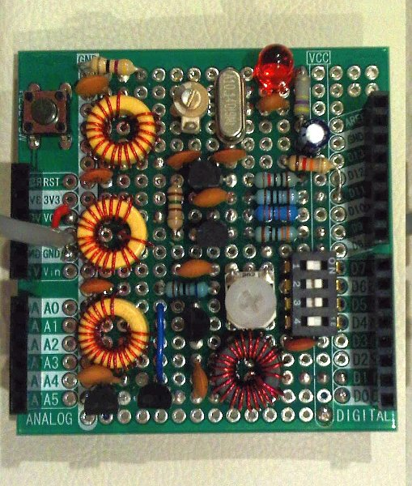
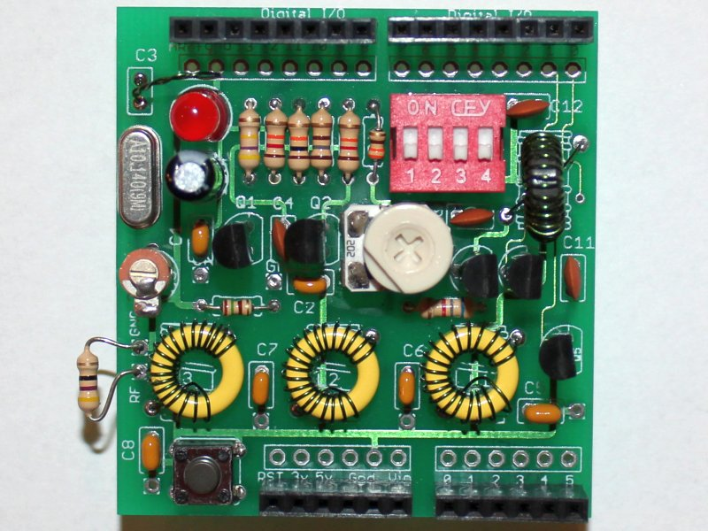

QRSS MultiMode Shield
Hans Summers, G0UPL


-
Source code for this project
http://hamradioprojects.com/authors/g0upl/+mm-shield/code -
Using LEDs as varactor diodes
http://www.hanssummers.com/varicap.html -
Author’s website, containing considerable QRSS-related content
http://www.hanssummers.com -
Slow-Hellschreiber information
http://www.hanssummers.com/qrss/qrssqrv2.html -
Kit of PCB and components for this project
http://www.hanssummers.com/qrssarduino - Prototyping Shield
For this project, a shield with plain matrix of holes is better one with a DIP prototyping area.
http://www.freetronics.com/products/protoshield-basic
http://www.sparkfun.com/products/7914
License
-
The Arduino sketch in this project is distributed under the terms of the MIT License
http://www.opensource.org/licenses/mit-license. -
The schematics in this project are licensed under the CC-BY-SA 3.0 license:
http://creativecommons.org/licenses/by-sa/3.0/
http://creativecommons.org/licenses/by-sa/3.0/